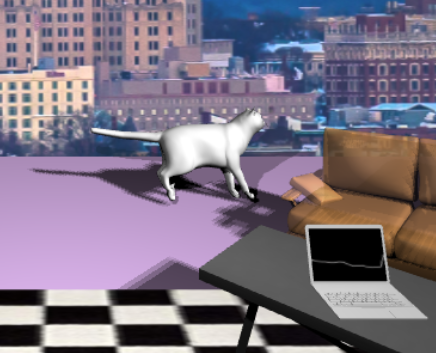
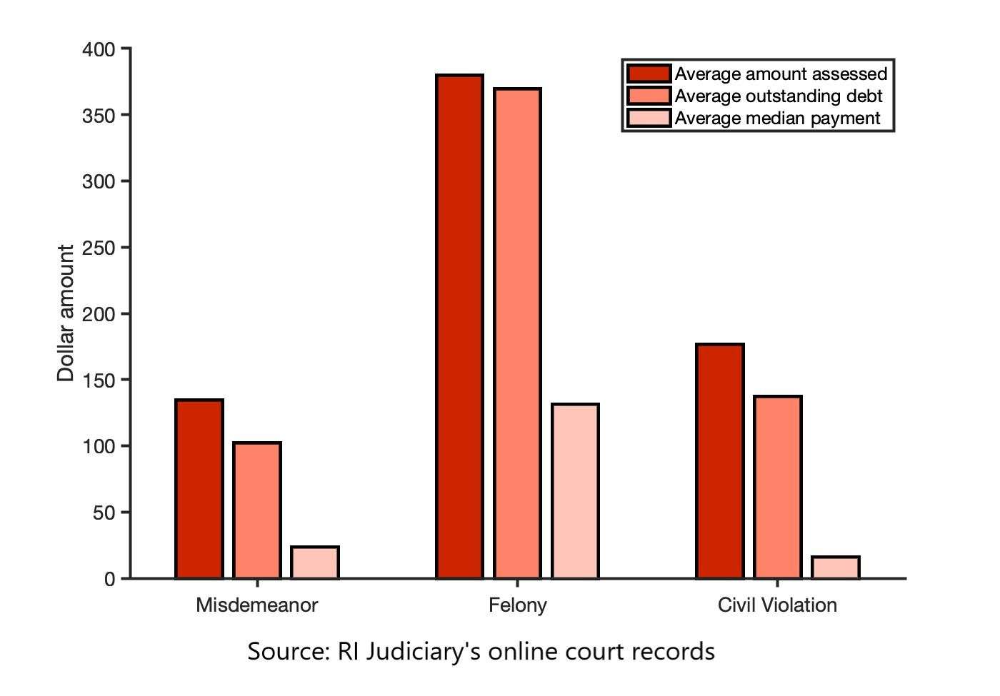
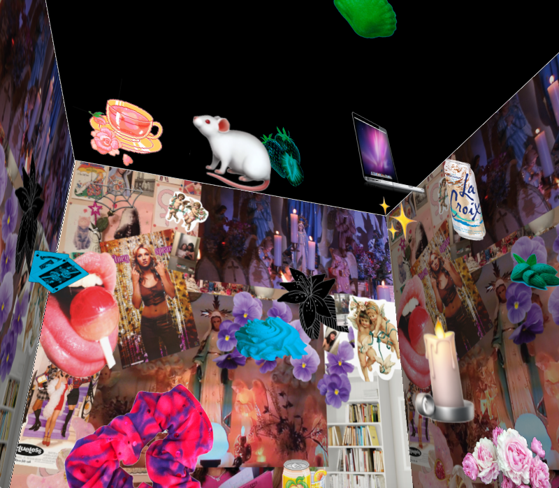
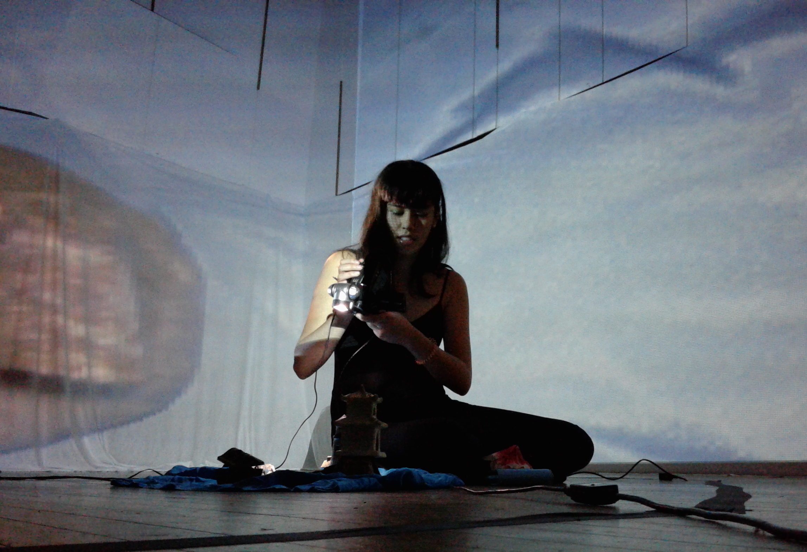

April 2020
Undergraduate Thesis: “Diagram, Debug, Fold: Computer Programming as a Form of Critique”
Undergraduate Thesis: “Diagram, Debug, Fold: Computer Programming as a Form of Critique”
Coding, reading, writing, and critique: a description of programming as a formal practice of “diagramming,” i.e. the creation of figures and topologies that traverse multiple scales of technicity; the importance of supplement/support/software to the writing of high-level programs; Derridean failure, bugs, surprise; code as pharmakon; debugging as Foucauldian technology of the self; irony and the (originary) technicity of critique.
April 2020
The College Hill Independent: The Breakers
The College Hill Independent: The Breakers
Play/fiction: Newport, RI. Train tracks and miniature train that go around the stage. A drawing room with huge window onto stormy sea (screen looping animation with weather simulation). Girl in pale-pink silk with cream rosettes rings a silver bell. A complex mechanism that runs around the frame of the scene springs into action, spouting tea, milk, and sugar into a small porcelain cup which she holds up (exaggeratedly well-articulated sounds of whirring, plopping splashing).
August 2019
Cabinet Magazine: "Dynamicland and the Whimsical Digital Object"
 Instead of un-doing the artifice of GUIs, Bret Victor has made a fanciful technosphere of fourth-order skeuomorphic simulacra. The “art” of programming is, typically: functional elegance, algorithmic efficiency. Dynamicland activates the basic pleasure of skeuomorphism, dollhouses, and object-oriented programming: whimsy, excess, virtual realities, playing make-believe.
Instead of un-doing the artifice of GUIs, Bret Victor has made a fanciful technosphere of fourth-order skeuomorphic simulacra. The “art” of programming is, typically: functional elegance, algorithmic efficiency. Dynamicland activates the basic pleasure of skeuomorphism, dollhouses, and object-oriented programming: whimsy, excess, virtual realities, playing make-believe.
Cabinet Magazine: "Dynamicland and the Whimsical Digital Object"
Instead of un-doing the artifice of GUIs, Bret Victor has made a fanciful technosphere of fourth-order skeuomorphic simulacra. The “art” of programming is, typically: functional elegance, algorithmic efficiency. Dynamicland activates the basic pleasure of skeuomorphism, dollhouses, and object-oriented programming: whimsy, excess, virtual realities, playing make-believe.
May 2019
A-frame: Virtual Reality Music Visualizer
A-frame: Virtual Reality Music Visualizer

A music visualizer built using Web-VR platform A-frame and Jquery. Uses frequency and time domain data to modulate animations in a listening lounge, with multiple user settings. Ambient computing in VR :) Glitch link here.
April 2019
The College Hill Independent: Data journalism on court debt in Rhode Island
The College Hill Independent: Data journalism on court debt in Rhode Island

With a team of journalists investigating the cycle of court debt in RI, I wrote a program to scrape and crunch data from files from the RI Judiciary's case portal. The piece won a regional collegiate award for in-depth reporting.
March 2018
The College Hill Independent: "Sick Days: Individualized healthcare and corporatized well-being"
The health insurance app that catalyzed the West Virgina teachers' strike. Preventative healthcare and the differentiated machinations of neoliberal techno-biopolitics.
The College Hill Independent: "Sick Days: Individualized healthcare and corporatized well-being"
The health insurance app that catalyzed the West Virgina teachers' strike. Preventative healthcare and the differentiated machinations of neoliberal techno-biopolitics.
November 2017
The College Hill Independent: "The World Under Glass: Mars, money, and matter in Arizona"
Steve Bannon, California ideology, space age aspirations, and the Biosphere 2 project... As one journalist put it, "the mind is aspin with ambivalent impressions!"
The College Hill Independent: "The World Under Glass: Mars, money, and matter in Arizona"
Steve Bannon, California ideology, space age aspirations, and the Biosphere 2 project... As one journalist put it, "the mind is aspin with ambivalent impressions!"
December 2017
Fri/Sat/Sun (Material Girl in a 3D world), a VR Play
Fri/Sat/Sun (Material Girl in a 3D world), a VR Play

An interactive, immersive narrative piece created for Brown University's CAVE VR space. A study of mood and atmosphere, intimate places and interior dialogues through sound, language, and image.
November 2017
The College Hill Independent: "Five Movies on Small Screens"
Watching movies how they were not supposed to be watched, the fun of miniatures.
The College Hill Independent: "Five Movies on Small Screens"
Watching movies how they were not supposed to be watched, the fun of miniatures.
December 2016
Video/audio/digitally mediated performance: the Drowning or Adventures of a GoPro
Video/audio/digitally mediated performance: the Drowning or Adventures of a GoPro

Cheap, water-proof cameras have birthed an obscure Youtube genre: dads and surfers showing off their GoPros, only to have them ripped away by waves, the camera recording its own drowning. At the same time, the deep sea remains one of the most unexplored areas of the Earth, and discoveries rely on cameras that sit on the ocean-floor, recording the marine life that passes by. This immersive audiovisual performance combines these cinematic forms to explore: fact vs. fiction, man vs. ocean, sailor vs. mermaid, and male gaze vs. female subjectivity in the digital age. Found footage --> cam found by mermaid and used to create deep sea creature pageant play. With Marcel Zaes (music composition) and Maurice Decaul (music text).